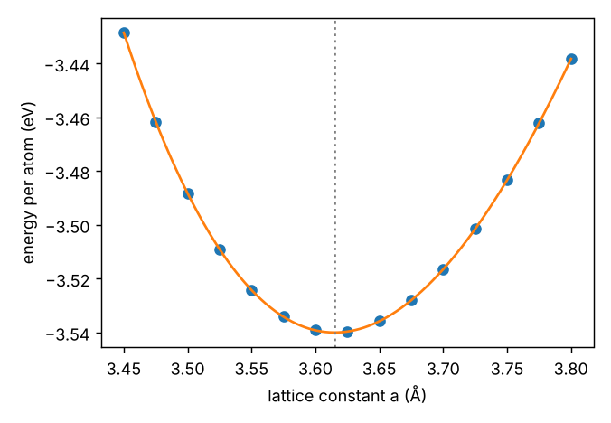
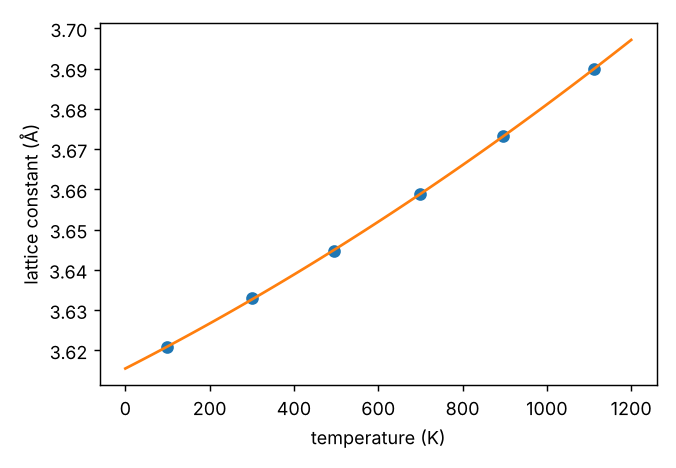
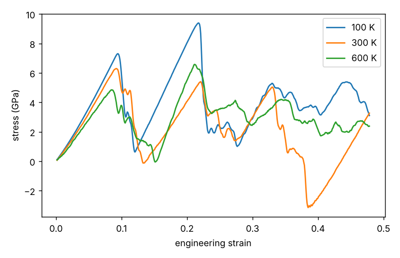

Curriculum/Computational labsLAB 503
Lab: A metal with LAMMPS: copper with an EAM potential
In the previous lab you simulated a model fluid. Here you simulate a real metal, copper, with the embedded-atom method (EAM) and compute the properties that a materials scientist asks for first: lattice constant, cohesive energy, bulk modulus, thermal expansion, elastic constants, vacancy formation energy, surface energies and the response to a tensile test. Each property is a small numerical experiment with its own input file, and each result is compared with measured values. Everything was run for this page.
- Reading time
- about 35 min
- Leads to
- —
- Level
- Graduate: simulation methods
- Set up a metal simulation with
units metaland an EAM potential, and find the potential files. - Compute lattice constant, cohesive energy and bulk modulus from an energy–volume scan.
- Measure thermal expansion with NPT molecular dynamics.
- Extract elastic constants from stresses, and avoid the lattice-units trap of
change_box. - Compute defect energies by energy differences, with minimisation and box relaxation.
- Run and interpret a tensile test at several temperatures.
Step 1. Units, the EAM potential and where the files live#
For metals LAMMPS uses units metal: distance in Å, energy in eV, time in ps, temperature in K, pressure in bar, mass in g/mol. A time step of $0.002$ means $2$ fs; the pressure $1$ bar $=10^{-4}$ GPa, so $10^4$ bar $=1$ GPa. LAMMPS prints the pressure with the compressive-positive sign convention, so stress $=-$pressure.
The embedded-atom method writes the energy of atom $i$ as a pair term plus an “embedding” energy that depends on the electron density $\bar\rho_i=\sum_j f(r_{ij})$ contributed by its neighbours (CMS 502): $E_i=F(\bar\rho_i)+\tfrac12\sum_j\phi(r_{ij})$. The embedding term makes the energy depend on the local coordination, which a pair potential cannot do, so EAM gets the cohesive energy, the vacancy energy and the elastic constants of a metal right together (pair potentials like Lennard–Jones always give the Cauchy relation $C_{12}=C_{44}$, wrong for metals). The potential is not a formula in the input file but a tabulated file that comes with LAMMPS. The one used here, Cu_u3.eam, is the Foiles–Baskes–Daw potential for copper (Phys. Rev. B 33, 7983, 1986); its header names the author, the date and the fitted quantities.
LAMMPS looks for the file in the working directory and then in the folder named by the environment variable LAMMPS_POTENTIALS. If neither works you get the first error of this lab (deliberately reproduced):
ERROR on proc 0: cannot open eam potential file Cu_u3.eam: No such file or directory (src/src/potential_file_reader.cpp:58)Fix it by pointing the variable to the potentials folder of your installation (with pip: inside the lammps/share/lammps/potentials folder of the environment; with conda: $CONDA_PREFIX/share/lammps/potentials; with apt: /usr/share/lammps/potentials) or by copying the file next to your input:
export LAMMPS_POTENTIALS=/path/to/lammps/share/lammps/potentials
ls "$LAMMPS_POTENTIALS" | head # Cu_u3.eam, AlCu.eam.alloy, Ni_u3.eam, ...A potential is only as good as the properties it was fitted to. For production work you take a potential for your element or alloy from a curated repository (the NIST Interatomic Potentials Repository, OpenKIM), read the paper, and check that it reproduces the properties you care about. Many potentials are available as eam/alloy (several elements in one file; pair_coeff * * AlCu.eam.alloy Al Cu) or eam/fs files. The same workflow of this lab applies to every one of them.
Step 2. Lattice constant, cohesive energy and bulk modulus#
The simplest simulation has no dynamics at all: build a crystal, evaluate the energy once (run 0) and repeat for several lattice constants. Here is the input file for one lattice constant:
# Copper with an embedded-atom-method (EAM) potential: lattice constant and cohesive energy at 0 K
# Run: lmp -in in.cu_static
variable a index 3.615 # lattice constant in Angstrom (override with -var a 3.60)
units metal # eV, Angstrom, ps, bar, K
atom_style atomic
boundary p p p
lattice fcc ${a}
region box block 0 4 0 4 0 4
create_box 1 box
create_atoms 1 box # 4 x 4 x 4 cells x 4 atoms = 256 atoms
mass 1 63.546
pair_style eam # single-element EAM, tabulated "funcfl" file
pair_coeff 1 1 Cu_u3.eam # Foiles-Baskes-Daw potential distributed with LAMMPS
thermo_style custom step atoms pe pe/atoms press vol lx
thermo_modify format float %.8g
run 0 # one force evaluation, no dynamicslmp -in in.cu_staticImportant lines: units metal, the lattice fcc ${a} command (in metal units the number is the cube edge in Å), and pair_coeff 1 1 Cu_u3.eam (the file name replaces the numerical parameters of Lennard–Jones). The potential energy of 256 atoms and the pressure are printed. To scan $a$ use static.py, which runs the same commands in a loop from Python, fits a quartic polynomial around the minimum, and converts the curvature to the bulk modulus $B=V\,\mathrm d^2E/\mathrm dV^2$ (in GPa, using $1\ \mathrm{eV/\AA^3}=160.22$ GPa):
"""Energy against lattice constant for fcc copper (EAM): equilibrium lattice constant, cohesive energy and bulk modulus."""
import numpy as np, matplotlib
matplotlib.use("Agg")
import matplotlib.pyplot as plt
from lammps import lammps
def energy(a, n=4):
lmp = lammps(cmdargs=["-log", "none", "-screen", "none"])
for c in ["units metal", "atom_style atomic", f"lattice fcc {a}", f"region box block 0 {n} 0 {n} 0 {n}", "create_box 1 box",
"create_atoms 1 box", "mass 1 63.546", "pair_style eam", "pair_coeff 1 1 Cu_u3.eam", "run 0"]:
lmp.command(c)
e = lmp.get_thermo("pe") / lmp.get_natoms(); lmp.close()
return e
a = np.linspace(3.45, 3.80, 15)
E = np.array([energy(x) for x in a])
c = np.polyfit(a, E, 4) # quartic fit near the minimum
aa = np.linspace(a[0], a[-1], 2000); Ef = np.polyval(c, aa)
a0 = aa[np.argmin(Ef)]; E0 = Ef.min()
V = a ** 3 / 4 # volume per atom
cv = np.polyfit(V, E, 4); Vv = np.linspace(V[0], V[-1], 4000); Evv = np.polyval(cv, Vv)
V0 = Vv[np.argmin(Evv)]
d2 = np.polyval(np.polyder(cv, 2), V0)
B = V0 * d2 * 160.21766 # eV/A^3 -> GPa
print(f"a0 = {a0:.4f} A E_coh = {E0:.4f} eV/atom B = {B:.1f} GPa")
print("a (A) E (eV/atom)")
for x, e in zip(a[::2], E[::2]): print(f"{x:6.3f} {e:9.5f}")
plt.figure(figsize=(5.2, 3.6)); plt.plot(a, E, "o"); plt.plot(aa, Ef, "-"); plt.axvline(a0, color="gray", ls=":")
plt.xlabel("lattice constant a (Å)"); plt.ylabel("energy per atom (eV)"); plt.tight_layout(); plt.savefig("cu_energy.png", dpi=130)a0 = 3.6149 A E_coh = -3.5400 eV/atom B = 138.9 GPa
a (A) E (eV/atom)
3.450 -3.42849
3.550 -3.52423
3.600 -3.53920
3.650 -3.53583
3.750 -3.48332
3.800 -3.43824
Compare with experiment (from tables): $a_0=3.615$ Å, cohesive energy $3.49$ eV/atom, bulk modulus $140$ GPa. The simulation reproduces all three, which is no accident: they were the quantities the potential was fitted to. The test of a potential is a property that was not in the fit. Note also how little the energy changes: $0.0004$ eV/atom between $a=3.60$ and $3.65$ near the minimum; the curve is a parabola, and the vertex position, found from many points and a fit, is far more precise than any single point.
Step 3. Thermal expansion with NPT dynamics#
At $0$ K the lattice constant is the minimum of the energy. At finite temperature atoms vibrate in an asymmetric potential, and the average lattice constant grows (PHYS 102, Lecture 7). To measure it, let the box change size at zero pressure with the npt integrator:
# Thermal expansion of copper: NPT molecular dynamics at zero pressure
# Run: lmp -in in.cu_thermal -var T 600
variable T index 300.0 # temperature in K
variable n index 6 # cells per direction
units metal
atom_style atomic
boundary p p p
lattice fcc 3.615
region box block 0 ${n} 0 ${n} 0 ${n}
create_box 1 box
create_atoms 1 box
mass 1 63.546
pair_style eam
pair_coeff 1 1 Cu_u3.eam
velocity all create ${T} 4928459 dist gaussian
timestep 0.002 # 2 fs
fix 1 all npt temp ${T} ${T} 0.2 iso 0.0 0.0 2.0 # damping: 0.2 ps (T), 2 ps (P)
thermo 1000
thermo_style custom step temp pe press vol lx
run 10000 # 20 ps equilibration
variable a equal lx/${n} # lattice constant
fix av all ave/time 10 100 1000 v_a c_thermo_temp c_thermo_press
run 10000 # 20 ps averaging
print "RESULT T = $(f_av[2]:%.1f) K a = $(f_av[1]:%.5f) Angstrom P = $(f_av[3]:%.1f) bar"Notes. fix npt temp 600 600 0.2 iso 0.0 0.0 2.0 couples the atoms to a thermostat (damping $0.2$ ps $=100$ steps) and to a barostat that scales the box isotropically to hold $P=0$ bar (damping $2$ ps $=1000$ steps: the barostat must be slower than the thermostat). We discard the first 20 ps and average over the next 20 ps with fix ave/time. In the output (RESULT T = 605.2 K a = 3.65186 Angstrom P = 272.6 bar) notice that the average pressure is not exactly zero: a few hundred bar are noise of the barostat for a box of 864 atoms (about $0.03$ GPa, small compared with $140$ GPa). Now scan temperature with scan_thermal.py:
"""Lattice constant of Cu against temperature (EAM, NPT) and the linear thermal-expansion coefficient."""
import re, subprocess, numpy as np, matplotlib
matplotlib.use("Agg")
import matplotlib.pyplot as plt
T, A = [], []
for temp in (100, 300, 500, 700, 900, 1100):
out = subprocess.run(["lmp", "-in", "in.cu_thermal", "-var", "T", str(temp), "-log", "none"], capture_output=True, text=True).stdout
m = re.search(r"RESULT T = (\S+) K a = (\S+) Angstrom P = (\S+) bar", out)
t, a, p = map(float, m.groups()); T.append(t); A.append(a)
print(f"T = {t:7.1f} K a = {a:.5f} A <P> = {p:7.1f} bar")
T, A = np.array(T), np.array(A)
c = np.polyfit(T, A, 2)
a300 = np.polyval(c, 300)
alpha = np.polyval(np.polyder(c), 300) / a300
print(f"alpha(300 K) = {alpha * 1e6:.1f} x 1e-6 /K (experiment: 16.5e-6 /K)")
a_avg = np.polyfit(T, A, 1)[0] / A.mean()
print(f"mean alpha 100-1100 K = {a_avg * 1e6:.1f} x 1e-6 /K")
plt.figure(figsize=(5.2, 3.6)); plt.plot(T, A, "o"); tt = np.linspace(0, 1200, 100); plt.plot(tt, np.polyval(c, tt), "-")
plt.xlabel("temperature (K)"); plt.ylabel("lattice constant (Å)"); plt.tight_layout(); plt.savefig("cu_thermal.png", dpi=130)T = 98.7 K a = 3.62082 A <P> = -47.5 bar
T = 301.4 K a = 3.63289 A <P> = -102.5 bar
T = 495.2 K a = 3.64475 A <P> = 261.8 bar
T = 699.3 K a = 3.65894 A <P> = -241.4 bar
T = 897.0 K a = 3.67313 A <P> = 65.6 bar
T = 1111.2 K a = 3.68990 A <P> = 505.8 bar
alpha(300 K) = 16.7 x 1e-6 /K (experiment: 16.5e-6 /K)
mean alpha 100-1100 K = 18.6 x 1e-6 /K
The linear thermal-expansion coefficient is $\alpha=\dfrac1a\dfrac{\mathrm da}{\mathrm dT}$; at $300$ K it is $16.7\times10^{-6}\ \mathrm{K^{-1}}$ against the measured $16.5\times10^{-6}$: an unusually good agreement for a quantity that is not fitted but results from the anharmonic part of the potential (Lecture 7 of PHYS 102 showed that a harmonic crystal does not expand). Notice that $\alpha$ increases with $T$ ($18.6\times10^{-6}$ average to $1100$ K): classical simulations have no quantum freezing of vibrations, so they overestimate $\alpha$ at low temperature, where the real value goes to zero. (At $100$ K the experimental $\alpha$ is about $10\times10^{-6}$.)
Step 4. Elastic constants from stresses#
A cubic crystal has three independent elastic constants, $C_{11}$, $C_{12}$ and $C_{44}$ (MATH 302, Lecture 6). They are the coefficients of Hooke’s law $\sigma_{ij}=C_{ijkl}\varepsilon_{kl}$ and are obtained by applying a small strain and reading the stress: stretching along $x$ by $\varepsilon$ gives $\sigma_{xx}=C_{11}\varepsilon$ and $\sigma_{yy}=C_{12}\varepsilon$; a simple shear $\gamma$ gives $\sigma_{xy}=C_{44}\gamma$. At 0 K, in a perfect fcc crystal, every atom is at a centre of symmetry so the strained atoms stay at their ideal positions (no internal relaxation is needed) and a single force evaluation per strain is enough:
# Elastic constants of fcc copper from small homogeneous strains at 0 K
# Run: lmp -in in.cu_elastic
variable a equal 3.6149 # equilibrium lattice constant from the static scan (Angstrom)
variable e equal 0.002 # strain magnitude
units metal
atom_style atomic
lattice fcc ${a}
region box block 0 4 0 4 0 4
create_box 1 box
create_atoms 1 box
mass 1 63.546
pair_style eam
pair_coeff 1 1 Cu_u3.eam
thermo_style custom step pe pxx pyy pzz pxy pxz pyz
thermo_modify format float %.6g
# --- reference state: should be stress free ---
run 0
# --- strain along x: sigma_xx = C11 e sigma_yy = C12 e ---
change_box all x scale $(1+v_e) remap
run 0
change_box all x scale $(1/(1+v_e)) remap
# --- simple shear xy: sigma_xy = C44 gamma (change_box xy delta needs a triclinic box) ---
change_box all triclinic
change_box all xy delta $(v_e*ly) remap units box # 'units box' matters: the default is lattice units!
run 0The first run line prints the reference state (pressure about $115$ bar $=0.012$ GPa, so the stress is nearly zero: the lattice constant $3.6149$ is within $10^{-4}$ of the minimum). The second prints the stresses under $0.2\%$ extension; the third under a $0.2\%$ shear. The output columns are the potential energy and the six pressure components in bar:
Step PotEng Pxx Pyy Pzz Pxy Pxz Pyz
0 -906.24 114.952 114.952 114.952 -2.6e-12 ~0 ~0 reference
0 -906.234 -3216.71 -2352.6 -2352.6 3.6e-12 ~0 ~0 0.2% extension along x
0 -906.237 119.739 124.994 113.139 -1529.42 ~0 ~0 0.2% shear in xyCompute by hand: stress is minus pressure, so $\Delta\sigma_{xx}=(3216.71+114.95)$ bar $=3331.7$ bar $=0.3332$ GPa, and $C_{11}=0.3332/0.002=166.6$ GPa; $\Delta\sigma_{yy}=(2352.6+114.95)=2467.6$ bar and $C_{12}=123.4$ GPa; $\sigma_{xy}=0.1529$ GPa so $C_{44}=76.5$ GPa. Doing the same for several strains with positive and negative signs (to cancel the residual stress and second-order terms) is automated in elastic.py:
"""Elastic constants C11, C12, C44 of Cu from the stresses of small strains (EAM, 0 K), with the checks that go with them."""
from lammps import lammps
def stresses(cmds, a=3.6149, n=4):
lmp = lammps(cmdargs=["-log", "none", "-screen", "none"])
for c in ["units metal", "atom_style atomic", f"lattice fcc {a}", f"region box block 0 {n} 0 {n} 0 {n}", "create_box 1 box",
"create_atoms 1 box", "mass 1 63.546", "pair_style eam", "pair_coeff 1 1 Cu_u3.eam"] + cmds + ["run 0"]:
lmp.command(c)
p = [lmp.get_thermo(k) for k in ("pxx", "pyy", "pzz", "pxy", "pxz", "pyz")]
ly = lmp.get_thermo("ly"); lmp.close()
return [-x / 1e4 for x in p], ly # stress in GPa (sigma = -pressure; 1 bar = 1e-4 GPa)
s0, ly = stresses([])
print(f"reference stress (should be ~0): sxx = {s0[0]:.3f} GPa")
for e in (0.001, 0.002, 0.004):
sp, _ = stresses([f"change_box all x scale {1 + e} remap"])
sm, _ = stresses([f"change_box all x scale {1 - e} remap"])
C11 = (sp[0] - sm[0]) / (2 * e); C12 = (sp[1] - sm[1]) / (2 * e)
st, ly = stresses(["change_box all triclinic", f"change_box all xy delta {e * 4 * 3.6149} remap units box"])
C44 = abs(st[3]) / e
print(f"strain {e:5.3f}: C11 = {C11:6.1f} C12 = {C12:6.1f} C44 = {C44:5.1f} GPa")
B = (C11 + 2 * C12) / 3; A = 2 * C44 / (C11 - C12)
print(f"bulk modulus B = (C11+2C12)/3 = {B:.1f} GPa Zener anisotropy A = 2C44/(C11-C12) = {A:.2f} Cauchy pressure C12-C44 = {C12 - C44:.1f} GPa")reference stress (should be ~0): sxx = -0.011 GPa
strain 0.001: C11 = 167.3 C12 = 124.2 C44 = 76.5 GPa
strain 0.002: C11 = 167.3 C12 = 124.2 C44 = 76.5 GPa
strain 0.004: C11 = 167.3 C12 = 124.2 C44 = 76.5 GPa
bulk modulus B = (C11+2C12)/3 = 138.6 GPa Zener anisotropy A = 2C44/(C11-C12) = 3.55 Cauchy pressure C12-C44 = 47.7 GPa| Quantity | EAM, 0 K (this lab) | Experiment, 300 K |
|---|---|---|
| $C_{11}$ (GPa) | 167.3 | 168.4 |
| $C_{12}$ (GPa) | 124.2 | 121.4 |
| $C_{44}$ (GPa) | 76.5 | 75.4 |
| $B=(C_{11}+2C_{12})/3$ (GPa) | 138.6 | 137.1 |
| Zener ratio $2C_{44}/(C_{11}-C_{12})$ | 3.55 | 3.21 |
The constants are independent of the strain size in the range $0.1$–$0.4\%$: that is the test that you are in the linear regime (use at most about $0.5\%$). The bulk modulus agrees with Step 2 ($138.9$ GPa) from a completely independent route. The Zener ratio $3.5$ means that copper is strongly elastically anisotropic: the shear stiffness along $\langle100\rangle$ ($C_{44}$) is $3.5$ times that along $\langle110\rangle$ ($(C_{11}-C_{12})/2=21.5$ GPa), a result which controls the orientation dependence of Young’s modulus (from these constants, $61$ GPa along $[100]$ and $194$ GPa along $[111]$; see MATH 302, Worked example 6.2). The positive Cauchy pressure $C_{12}-C_{44}=48$ GPa is the signature of metallic bonding that a pair potential cannot reproduce.
The first version of the shear input did not have the words units box at the end of the change_box line. The result was $C_{44}=276$ GPa, 3.6 times too large, in a perfectly regular run with no warning. The reason: change_box (like create_box, region, displace_atoms and others) measures lengths in lattice units by default, and the lattice spacing is $3.6149$ Å. A delta of $0.0289$ was therefore taken as $0.0289\times3.6149=0.1045$ Å: a shear of $0.0072$ instead of $0.002$. The ratio $276/76.5=3.61$ gave it away. Rules: check every number against a known value, repeat for two strain sizes (the ratio $\sigma/\varepsilon$ should be the same), and write units box whenever you mean Å. This is the most common silent error in LAMMPS inputs.
Step 5. Point defects: the vacancy formation energy#
Remove one atom from a perfect crystal and measure how much energy it costs; the removed atom goes to the surface or to a reservoir of bulk crystal, so the formation energy is
$$E_f^\mathrm{vac}=E(N-1)-\frac{N-1}{N}E(N),$$
where $E(N)$ is the energy of the perfect crystal and $E(N-1)$ the energy with one vacancy (the factor $(N-1)/N$ is the energy of $N-1$ atoms of bulk). Atoms next to the vacancy relax inward, lowering the energy. The input does three calculations: it relaxes the perfect crystal (positions and box with fix box/relax), deletes atom 1, evaluates the energy without relaxation, and then minimises:
# Vacancy formation energy in copper: E_f = E(N-1 atoms, relaxed) - (N-1)/N * E(N atoms, perfect)
# Run: lmp -in in.cu_vacancy
variable n index 5 # cells per direction (5 -> 500 atoms)
units metal
atom_style atomic
boundary p p p
lattice fcc 3.6149
region box block 0 ${n} 0 ${n} 0 ${n}
create_box 1 box
create_atoms 1 box
mass 1 63.546
pair_style eam
pair_coeff 1 1 Cu_u3.eam
thermo_style custom step atoms pe press lx
# ---- perfect crystal: relax the box (zero pressure) and the atoms ----
fix rel all box/relax iso 0.0 vmax 0.001
minimize 1.0e-12 1.0e-12 10000 100000
unfix rel
variable E0 equal $(pe)
variable N0 equal $(atoms)
print "perfect crystal: N = ${N0} E = ${E0} eV E/atom = $(v_E0/v_N0:%.5f) eV"
# ---- remove one atom ----
group centre id 1
delete_atoms group centre
# unrelaxed energy: same positions, one atom fewer
run 0
variable Eunrel equal $(pe)
variable Ef0 equal ${Eunrel}-(v_N0-1)/v_N0*${E0}
print "unrelaxed vacancy formation energy = ${Ef0} eV"
# relax the atom positions at fixed box (constant volume: the usual convention differs, see the text)
fix rel2 all box/relax iso 0.0 vmax 0.001
minimize 1.0e-12 1.0e-12 10000 100000
variable Evac equal $(pe)
variable Ef equal ${Evac}-(v_N0-1)/v_N0*${E0}
print "relaxed vacancy formation energy (zero pressure) = ${Ef} eV"perfect crystal: N = 500 E = -1770.00000113997 eV E/atom = -3.54000 eV
unrelaxed vacancy formation energy = 1.31653955470006 eV
relaxed vacancy formation energy (zero pressure) = 1.28347983214007 eVThe perfect crystal reproduces the cohesive energy $-3.54$ eV/atom. The unrelaxed formation energy is $1.317$ eV and relaxation lowers it by only $0.033$ eV to $1.283$ eV, equal to the experimental value $1.28$ eV from positron annihilation (the potential was fitted to this number). The minimisation algorithm is conjugate gradient (MATH 304); the four numbers after minimize are the energy tolerance, force tolerance, and the maximum number of iterations and force evaluations. Always check the final lines of the minimisation output: Stopping criterion = energy tolerance means success, max iterations means it did not converge.
What the number means: at the melting point of copper ($1358$ K) the equilibrium vacancy fraction is $\exp(-E_f/k_\mathrm BT)=e^{-1.283/0.117}=1.7\times10^{-5}$, times $e^{S_f/k_\mathrm B}$ with a formation entropy of about $2k_\mathrm B$ (PHYS 102, Worked example 5.1). The migration barrier of the vacancy can be computed by moving the neighbouring atom along a path (nudged elastic band, fix neb), giving the diffusion activation energy $Q=E_f+E_m$ that enters CMS 504.
Repeat with n 4, n 6, n 8 (255, 431 and 1023 atoms): the energy should change by less than a few meV, since the vacancy interacts with its periodic images through the strain field. With first-principles codes the same check is much more expensive, which is why classical potentials are used first to find the required supercell size.
Step 6. Surfaces: building slabs with ASE and reading them into LAMMPS#
To compute the energy of a surface you need a slab: a few layers of atoms bounded by two surfaces and separated from its periodic images by vacuum. The surface energy per area is $\gamma=\dfrac{E_\mathrm{slab}-N\,E_\mathrm{coh}}{2A}$, with $E_\mathrm{coh}$ the bulk energy per atom and the 2 for the two faces. Building a slab with the correct orientation and periodic cell is easier with the Atomic Simulation Environment (ASE) than by hand in LAMMPS: ase.build.fcc100, fcc110 and fcc111 give the three low-index surfaces, and ase.io.write(..., format="lammps-data") writes the structure for LAMMPS (see LAB 201). The script then reads it with read_data, minimises, and computes $\gamma$ for slabs of increasing thickness:
"""Surface energies of the (100), (110) and (111) surfaces of copper (EAM, relaxed at 0 K).
The slabs are built with ASE (see the structures lab), written as LAMMPS data files and read back by LAMMPS."""
from ase.build import fcc100, fcc110, fcc111
from ase.io import write
from lammps import lammps
a0, ecoh, J = 3.6149, -3.54, 16.02176634 # J = conversion eV/A^2 -> J/m^2
builders = {"(100)": fcc100, "(110)": fcc110, "(111)": fcc111}
def slab_energy(name, layers):
atoms = builders[name]("Cu", size=(4, 4, layers), a=a0, vacuum=10.0, orthogonal=True)
atoms.pbc = True # periodic in z too: the 20 A of vacuum separates the images
write("slab.data", atoms, format="lammps-data", specorder=["Cu"], masses=True)
lmp = lammps(cmdargs=["-log", "none", "-screen", "none"])
for c in ["units metal", "atom_style atomic", "boundary p p p", "read_data slab.data", "pair_style eam", "pair_coeff 1 1 Cu_u3.eam",
"minimize 1.0e-12 1.0e-12 5000 50000", "run 0"]:
lmp.command(c)
E, N = lmp.get_thermo("pe"), int(lmp.get_natoms())
A = atoms.cell[0, 0] * atoms.cell[1, 1]
lmp.close()
return N, A, E, (E - N * ecoh) / (2 * A) * J
print("surface layers atoms area (A^2) E_slab (eV) gamma (J/m^2)")
for name in builders:
for layers in (6, 8, 10):
N, A, E, g = slab_energy(name, layers)
print(f"{name:8s} {layers:4d} {N:5d} {A:9.1f} {E:11.3f} {g:8.3f}")surface layers atoms area (A^2) E_slab (eV) gamma (J/m^2)
(100) 6 96 104.5 -323.034 1.288
(100) 10 160 104.5 -549.594 1.288
(110) 6 96 147.8 -313.779 1.412
(110) 10 160 147.8 -540.337 1.412
(111) 6 96 90.5 -326.496 1.181
(111) 10 160 90.5 -553.056 1.181The result is the same for 6, 8 and 10 layers, so the slabs are thick enough and the vacuum wide enough. The ordering $\gamma_{111}<\gamma_{100}<\gamma_{110}$ is the one expected from the number of broken bonds: a close-packed (111) surface breaks 3 of 12 bonds per atom, (100) breaks 4 and (110) breaks 5. The EAM values ($1.18$, $1.29$, $1.41$ J/m$^2$) are lower than the experimental polycrystalline value of about $1.8$ J/m$^2$ (extrapolated from the liquid), which is a known weakness of EAM potentials (they are fitted to bulk properties, and surfaces probe the lower coordination). The surface energy decides the equilibrium shape of nanoparticles (Wulff construction) and the crack-propagation energy of the Griffith criterion in MSE 302: $\sigma_f=\sqrt{2E\gamma/\pi a}$.
Building the orientations inside LAMMPS with lattice ... orient x ... orient y ... orient z gave the correct (100) value but an incorrect (110) (the same orientation as (100) by a slip in the vectors) and a (111) energy that changed from $1.91$ to $2.12$ J/m$^2$ with the number of layers. A result that depends on the thickness of the slab is a red flag: here the periodic box was not commensurate with the hexagonal layer. The fix was to build the slabs with ASE, which constructs a consistent orthogonal cell. Whenever a converged quantity does not converge, check the geometry first.
Step 7. A tensile test of a single crystal at three temperatures#
The last experiment is a deformation run: stretch the crystal at a constant strain rate and record the stress. In a laboratory test, copper yields at a few tens of MPa because real crystals contain dislocations that glide easily. A perfect periodic crystal contains none, so the simulation measures something different and instructive: the ideal strength, the stress at which the lattice itself becomes unstable and defects nucleate from nothing.
Three LAMMPS ingredients do the work. fix deform ... x erate 0.004 units box remap x changes the box length along $x$ at a rate of $0.004$ per ps (engineering strain rate $4\times10^{9}\ \mathrm{s^{-1}}$, enormous compared with the laboratory $10^{-3}\ \mathrm{s^{-1}}$, which is a limitation of every MD tensile test). remap x moves the atoms with the box so that the deformation is uniform. fix npt ... y 0 0 z 0 0 keeps the stress at zero in the two transverse directions (the crystal contracts laterally, as in a real test: Poisson effect) and holds the temperature. The stress is minus the pressure component along $x$, converted from bar to GPa by dividing by $10^4$.
# Uniaxial tension of a perfect copper single crystal along [100] (EAM, constant strain rate)
# Run: lmp -in in.cu_tensile -var T 300 -var rate 0.004
variable T index 300 # temperature, K
variable rate index 0.004 # engineering strain rate, 1/ps (0.004 /ps = 4e9 /s)
variable n index 10 # 10 x 10 x 10 cells = 4000 atoms
units metal
atom_style atomic
boundary p p p
lattice fcc 3.6149
region box block 0 ${n} 0 ${n} 0 ${n}
create_box 1 box
create_atoms 1 box
mass 1 63.546
pair_style eam
pair_coeff 1 1 Cu_u3.eam
velocity all create ${T} 8675309 dist gaussian
timestep 0.002
# ---- equilibrate at T and zero pressure in all directions ----
fix 1 all npt temp ${T} ${T} 0.2 iso 0.0 0.0 2.0
thermo 1000
thermo_style custom step temp pe press lx ly lz
run 5000
unfix 1
# ---- tension along x: deform x at a constant rate, keep zero stress in y and z ----
variable lx0 equal $(lx)
fix 2 all npt temp ${T} ${T} 0.2 y 0.0 0.0 2.0 z 0.0 0.0 2.0 drag 1.0
fix 3 all deform 1 x erate ${rate} units box remap x
variable strain equal (lx-v_lx0)/v_lx0
variable stress equal -pxx/10000 # GPa (LAMMPS pressure is compressive-positive, in bar)
fix out all print 100 "${strain} ${stress} $(temp) $(pe/atoms)" file tensile_${T}K.dat screen no title "# strain stress_GPa T pe_per_atom"
reset_timestep 0
thermo 2500
thermo_style custom step temp v_strain v_stress pe pxx pyy pzz
dump traj all custom 5000 tensile_${T}K.lammpstrj id type x y z
run 60000 # 120 ps -> strain 0.48 at 0.004/psRun it three times with -var T 100, -var T 300 and -var T 600. Each run has 4000 atoms and 60 000 steps and takes minutes on a laptop core. The output files tensile_100K.dat etc. have four columns (strain, stress in GPa, temperature, potential energy per atom), and plot_tensile.py smooths the thermal noise with a 5-point running mean and finds the peaks:
"""Stress-strain curves of the copper single crystal at several temperatures and the peak (yield) stress."""
import glob, re, numpy as np, matplotlib
matplotlib.use("Agg")
import matplotlib.pyplot as plt
fig, ax = plt.subplots(figsize=(6.2, 4))
print("T (K) peak stress (GPa) strain at peak Young's modulus from 0-2% (GPa)")
for fn in sorted(glob.glob("tensile_*K.dat"), key=lambda f: float(re.findall(r"tensile_(\d+)K", f)[0])):
T = float(re.findall(r"tensile_(\d+)K", fn)[0])
d = np.loadtxt(fn, skiprows=1)
strain, stress = d[:, 0], d[:, 1]
k = 5 # running mean of 5 points removes the thermal noise
s = np.convolve(stress, np.ones(k) / k, mode="valid"); e = strain[k // 2: len(strain) - k // 2]
i = np.argmax(s)
m = (e > 0.005) & (e < 0.025)
E = np.polyfit(e[m], s[m], 1)[0]
print(f"{T:5.0f} {s[i]:10.2f} {e[i]:8.3f} {E:8.1f}")
ax.plot(e, s, label=f"{T:.0f} K")
ax.set(xlabel="engineering strain", ylabel="stress (GPa)"); ax.legend(); fig.tight_layout(); fig.savefig("cu_tensile.png", dpi=130)T (K) peak stress (GPa) strain at peak Young's modulus from 0-2% (GPa)
100 9.39 0.218 67.7
300 6.30 0.092 61.9
600 6.57 0.211 53.7
Read the figure in three parts.
(1) The elastic region. The initial slope is Young’s modulus along $[100]$: $67.7$, $61.9$ and $53.7$ GPa at 100, 300 and 600 K. The 0 K value computed from the constants of Step 4 is $E_{[100]}=(C_{11}-C_{12})(C_{11}+2C_{12})/(C_{11}+C_{12})=61.5$ GPa, and the simulation at 300 K agrees. The modulus decreases with temperature because the larger vibrations sample the soft side of the interatomic potential (the same anharmonicity that gave thermal expansion in Step 3). At $1\%$ strain the stress is $0.6$ GPa, which you can predict before running.
(2) The first peak is the ideal strength. Reading the first maximum before $\varepsilon=0.14$ (the table above gives the global maximum, which at 100 and 600 K is the second peak) gives $7.30$ GPa at $\varepsilon=0.094$ for 100 K, $6.30$ GPa at $0.092$ for 300 K and $4.85$ GPa at $0.085$ for 600 K. Higher temperature means a lower peak: thermal fluctuations help the crystal over the nucleation barrier. This is typical of thermally activated processes, and it is the reason the strength of an MD tensile test depends on the strain rate as well as on temperature (Exercise 4).
(3) After the peak the stress falls to nearly zero (at $300$ K, $0.04$ GPa at $\varepsilon=0.14$), then the crystal loads again to a second peak ($9.39$ GPa at 100 K, $4.93$ GPa at 300 K, $6.57$ GPa at 600 K) and drops again. The stress is not a monotonic function of strain because the crystal is not stretching homogeneously any more. What happens inside is the interesting part, and a stress–strain curve alone cannot tell you. For that you classify every atom by its local environment.
Seeing what happens: common-neighbour analysis
The common-neighbour analysis (CNA) labels each atom as fcc, hcp, bcc or “other” from the pattern of bonds among its neighbours. In LAMMPS, compute cna/atom 3.08 does it with a cutoff between the first and second neighbour shells of copper ($3.08$ Å $\approx1.21\,a/\sqrt2$; the cutoff must lie between the two shells). The centrosymmetry parameter compute centro/atom fcc is a second, complementary measure of local disorder. The script runs the 300 K test once, writes a per-atom dump every $0.005$ strain, and counts the atoms in each class afterwards:
"""What happens at the stress peaks? Run the 300 K tensile test once, dump per-atom CNA and centrosymmetry every 0.005 strain, then count structures per frame."""
import numpy as np
from lammps import lammps
T, rate, n = 300, 0.004, 10
dt, every = 0.002, 1250 # 1250 steps = 0.005 strain at this rate
lmp = lammps(cmdargs=["-log", "none", "-screen", "none"])
for c in ["units metal", "atom_style atomic", "boundary p p p", "lattice fcc 3.6149", f"region box block 0 {n} 0 {n} 0 {n}", "create_box 1 box",
"create_atoms 1 box", "mass 1 63.546", "pair_style eam", "pair_coeff 1 1 Cu_u3.eam", f"velocity all create {T} 8675309 dist gaussian",
f"timestep {dt}", f"fix 1 all npt temp {T} {T} 0.2 iso 0.0 0.0 2.0", "run 5000", "unfix 1",
f"fix 2 all npt temp {T} {T} 0.2 y 0.0 0.0 2.0 z 0.0 0.0 2.0 drag 1.0", f"fix 3 all deform 1 x erate {rate} units box remap x",
"compute cna all cna/atom 3.08", "compute csp all centro/atom fcc", "thermo_style custom step lx pxx",
f"dump d all custom {every} struct.dump id c_cna c_csp", "reset_timestep 0"]:
lmp.command(c)
lx0 = lmp.get_thermo("lx")
lmp.command("run 0")
lmp.command("fix pr all print 1250 \"$(step) $(lx) $(-pxx/10000)\" file stress_frames.dat screen no")
lmp.command("run 36000")
lmp.close()
# parse dump
frames, cur = [], None
lines = open("struct.dump").read().split("\n")
i = 0
while i < len(lines):
if lines[i].startswith("ITEM: TIMESTEP"):
step = int(lines[i + 1]); nat = int(lines[i + 3]); i += 9
arr = np.array([l.split() for l in lines[i:i + nat]], float); i += nat
frames.append((step, arr))
else:
i += 1
sf = {int(float(l.split()[0])): (float(l.split()[1]), float(l.split()[2])) for l in open("stress_frames.dat") if l.strip() and not l.startswith("#")}
print(" strain stress(GPa) fcc hcp bcc other CSP>1")
for step, a in frames:
code = np.round(a[:, 1]).astype(int); csp = a[:, 2]
if step in sf:
eps = sf[step][0] / sf[0][0] - 1 if 0 in sf else float("nan"); s = sf[step][1]
else:
eps = step * dt * rate; s = float("nan")
print(f" {step*dt*rate:6.3f} {s:8.2f} {np.sum(code==1):5d} {np.sum(code==2):5d} {np.sum(code==3):5d} {np.sum(code==5):5d} {np.sum(csp>1):5d}") strain stress(GPa) fcc hcp bcc other CSP>1
0.000 -0.09 4000 0 0 0 347
0.050 3.30 3994 0 0 6 402
0.080 5.57 3961 0 0 39 546
0.090 6.28 3946 0 0 54 693
0.100 4.74 1933 0 22 2045 1452
0.110 4.48 1333 124 16 2527 2269
0.120 2.26 1856 885 1 1258 2202
0.130 0.52 2453 1084 0 463 1746
0.140 0.04 2540 1257 0 203 1660
0.200 4.00 2512 1184 0 304 1790
0.220 4.93 2476 1181 0 343 1803
0.230 3.02 3170 800 0 30 1171
0.260 1.83 1931 1460 0 609 2221The table tells the story of the first stress drop, in the order in which it happens:
- Up to the peak ($\varepsilon\le0.09$): the crystal is perfect fcc (at least $3946$ of $4000$ atoms; the few “other” atoms are thermal fluctuations of a vibrating lattice, which is why the centrosymmetry count is not zero: at 300 K it is $347$ even at zero strain, so a threshold of $1$ Å$^2$ is too low for a hot crystal).
- At the peak ($0.09\to0.10$): in one interval of $0.005$ strain, $2000$ atoms leave the fcc state and the stress falls from $6.3$ to $4.7$ GPa. The lattice has become unstable and defects nucleate throughout the crystal.
- The drop ($0.10\to0.14$): hcp atoms appear ($124$, then $885$, then $1257$) while the disordered “other” class shrinks from $2527$ to $203$. An hcp atom in an fcc crystal is the signature of a stacking fault: the two layers around a faulted plane are locally hcp, and their presence means partial dislocations have swept across (111) planes. The crystal has shed the elastic strain through slip, and the stress is relaxed to nearly zero.
- Reloading ($0.14\to0.22$): the structure hardly changes ($2500$ fcc, $1200$ hcp), but the stress climbs again to $4.9$ GPa: the new, faulted configuration is elastic and stretches until a second event ($0.22\to0.23$, hcp falls to $800$ and fcc rises to $3170$) occurs.
This is what the “mechanism” of the simulation consists of: a homogeneous nucleation of partial dislocations that spreads through the whole crystal (in a periodic box there is no surface or grain boundary to start the process earlier), leaving stacking faults. The classification is a measurement, but its interpretation as dislocation nucleation is an inference: to see the dislocation lines themselves, open the dump in OVITO and apply the Dislocation analysis (DXA) modifier.
The peak stress of $6$–$7$ GPa is more than a hundred times the yield stress of copper ($\approx 0.05$ GPa for annealed single crystals, $0.2$ GPa for polycrystals). Three reasons: (1) no pre-existing dislocations, surfaces or grain boundaries; (2) a strain rate $10^{12}$ times faster than a laboratory test, so there is no time for thermally activated processes; (3) a tiny box of 4000 atoms, which allows a collective event that a macroscopic crystal would never undergo. The numbers are useful as trends (temperature, orientation, rate) and as the strength of the defect-free lattice, not as predictions of the yield stress of copper wire. Connecting atomistic strengths to macroscopic ones is the subject of the multiscale models in MSE 302 and the later CMS courses.
Summary of the lab in one table
| Property | Method | This lab | Experiment |
|---|---|---|---|
| Lattice constant (300 K) | NPT, Step 3 | 3.615 Å | 3.615 Å |
| Bulk modulus | $E(a)$ and elastic constants | 138.9 / 138.6 GPa | 137 GPa |
| $C_{11},C_{12},C_{44}$ | small strains, Step 4 | 167.3, 124.2, 76.5 GPa | 168, 121, 75 GPa |
| Vacancy formation energy | energy difference, Step 5 | 1.28 eV (unrelaxed 1.32) | 1.28 eV |
| Surface energy (111) | slab, Step 6 | 1.18 J/m$^2$ | about 1.8 J/m$^2$ (poor) |
| Ideal tensile strength [100], 300 K | deformation run, Step 7 | 6.3 GPa at $\varepsilon=0.09$ | not measurable on bulk copper |
- A metal is simulated with an embedded-atom-method (EAM) potential, pair_style eam in LAMMPS, in units metal (eV, angstrom, ps, bar); the potential file must be found through the working directory or the LAMMPS_POTENTIALS environment variable.
- Properties are computed by small numerical experiments: the lattice constant and bulk modulus from E(a) (3.615 angstrom, 139 GPa), thermal expansion from NPT runs (16.7e-6 per K at 300 K), elastic constants from stresses under small strains (C11=167, C12=124, C44=76.5 GPa), and defect energies from energy differences (vacancy 1.28 eV, surfaces 1.18 to 1.41 J/m2).
- A pitfall that costs hours: change_box and other commands interpret lengths in lattice units by default, so a shear of 0.002 became 0.0072 and gave C44 = 276 GPa instead of 76.5 until units box was added.
- A tensile test is a deformation run: fix deform stretches the box at a constant strain rate while fix npt keeps the transverse stresses at zero; the stress is minus the pressure component, the strain is the relative box length, and the peak stress marks the nucleation of dislocations in the perfect crystal.
- Always compare with experiment and with the limits of the method: EAM reproduces cohesive energy, lattice constant, elastic constants and the vacancy energy of copper because they were fitted, but it underestimates surface energies and cannot describe bonding changes or electronic effects.
Exercises#
Do the first two with a calculator and the numbers in the lab; the third and fourth ask you to modify an input file and predict the result before you run it.
(a) Using the elastic constants of Step 4, compute Young’s modulus along $[100]$ from $E=(C_{11}-C_{12})(C_{11}+2C_{12})/(C_{11}+C_{12})$. (b) Predict the stress at $\varepsilon=0.01$ in the 300 K tensile test. (c) The measured value is $0.59$ GPa at $\varepsilon=0.01$; why do the two differ slightly?
Hint
Insert $C_{11}=167.3$, $C_{12}=124.2$ GPa. Then stress $=E\varepsilon$.
Full solution
(a) $E=(167.3-124.2)(167.3+2\times124.2)/(167.3+124.2)=43.1\times415.7/291.5=61.5$ GPa. (b) $\sigma=E\varepsilon=61.5\times0.01=0.61$ GPa. (c) The elastic constants were computed at 0 K and the test is at 300 K; the measured slope at 300 K is $61.9$ GPa from the fit and the stress carries a thermal noise of about $\pm0.05$ GPa per point, so $0.59$ GPa is in agreement. The 100 K and 600 K moduli ($67.7$, $53.7$ GPa) show the trend with temperature.
(a) $61.5$ GPa (b) $0.61$ GPa (c) temperature and noise
The relaxed vacancy formation energy is $1.28$ eV. (a) Compute the equilibrium vacancy fraction $c=\exp(-E_f/k_\mathrm BT)$ at $300$, $600$ and $1000$ K, neglecting the formation entropy. (b) How many vacancies are there in a crystal of $10^{23}$ atoms at $1000$ K?
Hint
$k_\mathrm B=8.617\times10^{-5}$ eV/K.
Full solution
(a) $c(300)=\exp(-1.28/0.02585)=3\times10^{-22}$; $c(600)=\exp(-1.28/0.0517)=1.8\times10^{-11}$; $c(1000)=\exp(-1.28/0.08617)=3.5\times10^{-7}$. (b) $3.5\times10^{-7}\times10^{23}=3.5\times10^{16}$ vacancies. The factor of $10^{15}$ between 300 and 1000 K is why diffusion in solids is negligible at room temperature and important in heat treatment (CMS 504); in practice the formation entropy ($\approx2\,k_\mathrm B$) raises these numbers by a factor of about $e^{2}\approx7$.
(a) $3\times10^{-22}$, $1.8\times10^{-11}$, $3.5\times10^{-7}$ (b) $3.5\times10^{16}$
Use the table of Step 7 for the 300 K test. (a) What percentage of the atoms are in the hcp environment at $\varepsilon=0.14$? (b) What fraction of the atoms left the fcc state between $\varepsilon=0.09$ and $0.10$, and by how much did the stress fall? (c) Why is the centrosymmetry count not zero at $\varepsilon=0$?
Hint
Divide by $N=4000$. For (c) remember the temperature.
Full solution
(a) $1257/4000=31\%$. (b) fcc falls from $3946$ to $1933$: $2013/4000=50\%$ of the atoms, while the stress falls from $6.28$ to $4.74$ GPa, i.e. by $1.5$ GPa (25%) in a strain interval of $0.01$. The event is abrupt: half the crystal changes within about $2.5$ ps. (c) At 300 K every atom vibrates around its site, so its neighbours are not in perfect centrosymmetric pairs; $347$ atoms ($9\%$) exceed the $1$ Å$^2$ threshold from vibrations alone. A threshold has to be chosen above the thermal noise (CNA is more robust here because it uses the topology of the neighbour bonds rather than their exact positions).
(a) 31% (b) 50% of atoms; stress down 1.5 GPa (c) thermal vibration
Predict, then run: (a) how will the first peak stress at 300 K change if the strain rate is lowered from $0.004$ to $0.0004$ ps$^{-1}$ (-var rate 0.0004, ten times more steps) and why? (b) Write the commands that give the equivalent test in the $[111]$ direction. (c) State what you must keep fixed to compare orientations fairly.
Hint
Think of the peak as the escape over a barrier that is crossed by thermal fluctuations.
Full solution
(a) The peak is expected to decrease (the size is the quantity to measure): with ten times more time at each strain, thermal fluctuations have more chances to nucleate the dislocations before the lattice reaches the athermal limit, so the barrier is crossed at a smaller strain. It cannot fall by orders of magnitude: the ideal strength is bounded by the lattice instability. Run it and compare with your prediction; run at least two seeds (change the velocity seed), because a small change cannot be separated from the run-to-run scatter. (b) Build the box with lattice fcc 3.6149 orient x 1 1 1 orient y -1 1 0 orient z -1 -1 2 and a region commensurate with the orthogonal cell (for example region box block 0 8 0 10 0 6), then keep the same fix deform and fix npt lines. (c) The same number of atoms (or at least the same lateral size), the same temperature, strain rate, thermostat damping and seed; only the orientation changes. Single crystals loaded along $[111]$ are stiffer ($E=194$ GPa from the elastic constants) so the stress rises faster and the first peak occurs at a higher stress.
(a) Lower (thermal activation) (b) orient x 1 1 1 ... (c) fix everything but orientation
Going further and references#
- Daw, M. S. and Baskes, M. I., “Embedded-atom method: Derivation and application to impurities, surfaces, and other defects in metals”, Physical Review B 29, 6443 (1984): the origin of EAM.
- Mishin, Y. et al., “Structural stability and lattice defects in copper: Ab initio, tight-binding, and embedded-atom calculations”, Physical Review B 63, 224106 (2001); the NIST Interatomic Potentials Repository (
ctcms.nist.gov/potentials) lists many EAM and other potentials with their validation data. - Honeycutt, J. D. and Andersen, H. C., Journal of Physical Chemistry 91, 4950 (1987): common-neighbour analysis; Kelchner, C. L., Plimpton, S. J. and Hamilton, J. C., Physical Review B 58, 11085 (1998): the centrosymmetry parameter.
- Stukowski, A., Bulatov, V. V. and Arsenlis, A., “Automated identification and indexing of dislocations in crystal interfaces”, Modelling and Simulation in Materials Science and Engineering 20, 085007 (2012): the DXA method used in OVITO.
- Hirth, J. P. and Lothe, J., Theory of Dislocations, and the dislocation chapters of MSE 302: the continuum picture of what the CNA table shows.
- Previous lab: LAB 502: a fluid with LAMMPS. Related: LAB 201: building structures with ASE (used for the surface slabs of Step 6).